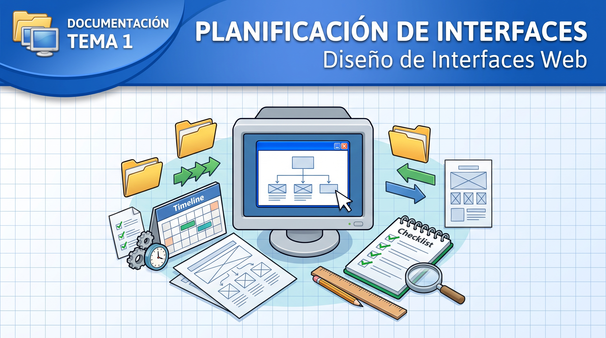

Tema 1: Planificación de Interfaces

Contenidos
Páginas de interés
- Guía para diseñar cards en UI: Mejores prácticas y ejemplos
- Guía de estilos y componentes - Junta de Castilla y León
- La guía de estilo perfecta para páginas web - IONOS
- 15 Herramientas para elegir Paletas y Gamas de Color - Aula CM
- TUTORIAL FIGMA: Usar un plugin para crear estilos de color
- The color system - Material Design 2
- Color roles - Material Design 3
- ¡Ni se te ocurra elegir los colores para tu web sin antes leer esto! - Creativolandia
- Figma para principiantes: guía completa | Diseña tu primera app paso a paso
- Tutorial Autolayout en Figma para Principiantes
- Colores y tipografía en diseño web: cómo combinarlos - Color;Code